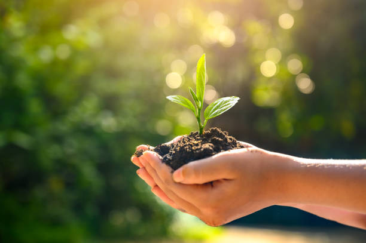

EST. SEPT 23, 2020 • MR. GOVIND SHUKLA • CHHATTISGARH
InAmigos Foundation is a Section 8 non-profit licensed by the Central Government. We nurture people, animals, and the planet — with transparency and care like nature itself.

InAmigos Foundation was founded on September 23, 2020, by Mr. Govind Shukla (Founder & CEO).
Founded on September 23, 2020, by Mr. Govind Shukla (Founder & CEO), InAmigos Foundation works like an ecosystem — professionals, volunteers, corporate partners all connected.
Our certifications ensure transparency, accountability, tax benefits for donors, and alignment with national development goals.
Providing food and clothing to the underprivileged — nourishing lives like soil nourishes seeds.
Quality education for underprivileged children — helping young minds bloom.
Animal welfare: rescue, protection and feeding — because every life belongs to this earth.
Women empowerment through skill development & financial independence.
Environmental conservation and sustainability — our core, our promise to the planet.
Enhancing employability through skill development — preparing youth to thrive.
Every contribution goes to food, education, women empowerment, animal welfare, environment & inclusion across India.